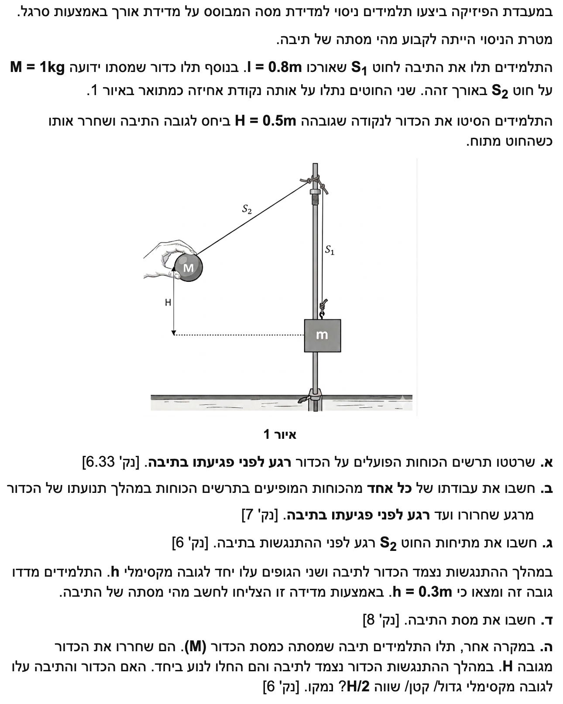

פתרון מלא: מדידת מסה באמצעות התנגשות
פיזיקה - מכניקה ותנועה מעגלית
פתרון מודרך וצעד-אחר-צעד, כולל תרשימי כוחות וניתוח אנרגיה ותנע.
עודכן:
--- --:--:--

[תמונת השאלה המקורית]
לא נמצאה תמונה בשם question-image.png באותה תיקייה.
מה נתון: כדור הנמצא בתנועה מעגלית (מטוטלת), הנבחן בדיוק ברגע הגעתו לנקודה הנמוכה ביותר במסלולו, רגע לפני ההתנגשות. גודל תאוצת הכובד נלקח כרגיל כ- \( g = 10 \text{ m/s}^2 \).
מה מחפשים: לשרטט תרשים של כל הכוחות הפועלים על הכדור (תרשים גוף חופשי - FBD) רגע לפני פגיעתו בתיבה, תוך הקפדה על כיוונים נכונים ויחס אורכים מתאים בין הווקטורים.
בסעיף זה אנו מסתמכים על הבנת הכוחות הפיזיקליים בתנועה מעגלית. הכוחות הם כוח הכובד הפועל מטה וכוח המתיחות הפועל במעלה החוט. העיקרון המנחה נשען על החוק השני של ניוטון בתנועה מעגלית, הקובע כי בנקודה הנמוכה שקול הכוחות חייב להיות כלפי מעלה (לכיוון מרכז המעגל).
נוסחאות ועקרונות בשימוש:
\(\Sigma\vec{F} = m\vec{a}_R\)
פתרון:
נשרטט את הכדור בנקודה הנמוכה ביותר. פועלים עליו שני כוחות: כוח הכובד \( Mg \) כלפי מטה, וכוח המתיחות של החוט \( T \) כלפי מעלה. מכיוון שהגוף מאיץ רדיאלית כלפי מרכז המסלול (כלומר כלפי מעלה), וקטור כוח המתיחות חייב להיות ארוך יותר מווקטור כוח הכובד.
טיפ מורה:
שימו לב לדרישה לצייר "תרשים של כל הכוחות". זוהי טעות נפוצה לצייר כוח צנטריפטלי ככוח בפני עצמו. הכוח הצנטריפטלי הוא השקול של הכוחות הרדיאליים, ולא כוח נוסף שיש לסמן בתרשים! הווקטור למעלה \( T \) שורטט ארוך יותר מהווקטור למטה \( Mg \) כדי להמחיש ששקול הכוחות אינו אפס, אלא מצביע למרכז המעגל.
מה נתון: מסת הכדור היא \( M = 1 \text{ kg} \). הכדור משוחרר ממנוחה מגובה \( H = 0.5 \text{ m} \) מעל לנקודת הפגיעה. היחידות כבר נתונות במערכת MKS ואין צורך בהמרות. תאוצת הכובד היא \( g = 10 \text{ m/s}^2 \).
מה מחפשים: את עבודתו של כל אחד מהכוחות שהופיעו בתרשים (כוח הכובד וכוח המתיחות) לאורך המסלול, מרגע השחרור ועד רגע לפני הפגיעה.
נשתמש בנוסחת העבודה לכוח קבוע או עבודה על דרך אלמנטרית, ובמשפט לפיו עבודת כוח הכובד (כוח משמר) שווה למינוס השינוי באנרגיה הפוטנציאלית.
נוסחאות ועקרונות בשימוש:
\(W = F \cos\theta \Delta s\)
\(W_G = -\Delta U_G\)
\(U_G = mgh\)
חישוב צעד-אחר-צעד:
נחשב את העבודה עבור כל כוח בנפרד:
- עבודת כוח המתיחות \( W_T \): בכל רגע נתון, כיוון התנועה (המהירות המשיקית) מאונך לכיוון החוט (הכיוון הרדיאלי שבו פועלת המתיחות). מכיוון שהזווית היא \( 90^\circ \), מתקיים \( \cos(90^\circ) = 0 \), ולכן כוח המתיחות אינו מבצע עבודה:
\[ W_T = 0 \text{ J} \]
- עבודת כוח הכובד \( W_G \): הכדור יורד גובה של \( H \). כוח הכובד פועל כלפי מטה, וכיוון ההעתק האנכי הוא גם כלפי מטה. לכן העבודה חיובית ושווה לשינוי באנרגיה הפוטנציאלית (ההתחלתית פחות הסופית):
\[ W_G = M \cdot g \cdot H = 1 \cdot 10 \cdot 0.5 = 5 \text{ J} \]
מסקנה: עבודת כוח המתיחות: \( 0 \text{ J} \) | עבודת כוח הכובד: \( 5.00 \text{ J} \).
טיפ מורה:
זכרו את כלל האצבע החשוב: כוח שפועל תמיד במאונך למסלול (כמו מתיחות במטוטלת או כוח נורמלי במשטח חלק) לא מבצע עבודה ואינו תורם לשינוי האנרגיה הקינטית של הגוף לפי משפט עבודה-אנרגיה \(W_{\text{total}} = \Delta E_k\).
מה נתון: אורך החוט הוא \( l = 0.8 \text{ m} \) (המהווה את רדיוס התנועה המעגלית \( r \)). מסת הכדור \( M = 1 \text{ kg} \). מצאנו שהאנרגיה הקינטית בנקודה הנמוכה שווה לעבודת כוח הכובד (או לפי שימור אנרגיה), והגובה ההתחלתי הוא \( H = 0.5 \text{ m} \).
מה מחפשים: את גודל מתיחות החוט \( T \) בדיוק רגע לפני ההתנגשות בתיבה.
כדי למצוא כוח בנקודה, עלינו להשתמש בחוק השני של ניוטון בציר הרדיאלי, יחד עם התאוצה הרדיאלית. כדי למצוא את המהירות \( v \), נשתמש בחוק שימור אנרגיה מכנית לפיו האנרגיה הפוטנציאלית מומרת כולה לאנרגיה קינטית בנקודה הנמוכה.
נוסחאות ועקרונות בשימוש:
\(\Sigma\vec{F} = m\vec{a}_R\)
\(a_R = \frac{v^2}{r}\)
\(E_k = \frac{1}{2}mv^2\)
\(U_G = mgh\)
חישוב צעד-אחר-צעד:
שלב 1: מציאת המהירות בנקודה הנמוכה
נמצא את המהירות \( v \) מתוך שימור אנרגיה (נקבע את מישור הייחוס \( U_G = 0 \) בנקודה הנמוכה):
\[ U_{G,\text{initial}} = E_{k,\text{final}} \]
\[ MgH = \frac{1}{2}Mv^2 \]
\[ v = \sqrt{2gH} = \sqrt{2 \cdot 10 \cdot 0.5} = \sqrt{10} \text{ m/s} \approx 3.162 \text{ m/s} \]
שלב 2: משוואת כוחות בציר הרדיאלי
נרשום את משוואת הכוחות. נבחר ציר חיובי המכוון כלפי מעלה (לכיוון מרכז המעגל). לכן התאוצה היא \( +a_R \):
\[ \Sigma F_R = M \cdot a_R \]
\[ T - Mg = M \frac{v^2}{l} \]
\[ T = M\left(g + \frac{v^2}{l}\right) \]
נציב את הערכים הידועים כולל ריבוע המהירות \( v^2 = 10 \text{ m}^2/\text{s}^2 \) ואת הרדיוס \( l = 0.8 \text{ m} \):
\[ T = 1 \cdot \left(10 + \frac{10}{0.8}\right) = 1 \cdot (10 + 12.5) = 22.5 \text{ N} \]
מסקנה: מתיחות החוט רגע לפני ההתנגשות היא \( T = 22.5 \text{ N} \).
טיפ מורה:
תמיד הקפידו לציין את כיוון הציר שבחרתם בעת רישום משוואת חוק שני של ניוטון! מכיוון שבחרנו ציר חיובי למרכז המעגל (למעלה), כוח המתיחות הוא חיובי ומשקלו הוא שלילי. בנוסף, מומלץ להציב את הביטוי המדויק ל- \( v^2 \) (ולא את השורש המקורב) כדי להימנע משגיאות עיגול מוקדמות במהלך חישוב ביניים.
מה נתון: הכדור (מסה \( M = 1 \text{ kg} \)) מתנגש בתיבה נחה ונדבק אליה (התנגשות פלסטית לחלוטין). מהירות הכדור לפני ההתנגשות מצאנו: \( v = \sqrt{10} \text{ m/s} \). לאחר ההתנגשות, שני הגופים עולים יחד לגובה מקסימלי נתון של \( h = 0.3 \text{ m} \) (יחידות MKS).
מה מחפשים: את מסת התיבה, אותה נסמן באות \( m \).
הבעיה מחולקת לשני שלבים נפרדים: שימור תנע בזמן ההתנגשות, ושימור אנרגיה מכנית לאחריה כשהמערכת המשותפת עולה לגובה שיא.
נוסחאות ועקרונות בשימוש:
\(m_A \vec{v}_A + m_B \vec{v}_B = (m_A + m_B)\vec{u}\)
\(E_{k,\text{initial}} = U_{G,\text{final}}\)
\(\frac{1}{2}(M+m)u^2 = (M+m)gh\)
חישוב צעד-אחר-צעד:
נוח להתחיל את הפתרון "מהסוף להתחלה" - נמצא תחילה את המהירות המשותפת של הגופים \( u \) מיד לאחר ההתנגשות, על ידי שימוש בנתון הגובה שאליו הגיעו.
שלב 1: שימור אנרגיה לאחר ההתנגשות
נשווה את האנרגיה הקינטית מיד לאחר ההתנגשות לאנרגיה הפוטנציאלית בגובה המקסימלי:
\[ \frac{1}{2}(M+m)u^2 = (M+m)gh \]
\[ u^2 = 2gh \]
\[ u = \sqrt{2 \cdot 10 \cdot 0.3} = \sqrt{6} \text{ m/s} \approx 2.449 \text{ m/s} \]
שלב 2: שימור תנע במהלך ההתנגשות
התיבה הייתה במנוחה לפני ההתנגשות, כלומר מהירותה ההתחלתית אפס. נציב במשוואת שימור התנע את מהירות הכדור \( v \) ואת המהירות המשותפת \( u \) שמצאנו:
\[ M \cdot v + m \cdot 0 = (M + m) \cdot u \]
\[ 1 \cdot \sqrt{10} = (1 + m) \cdot \sqrt{6} \]
\[ 1 + m = \frac{\sqrt{10}}{\sqrt{6}} = \sqrt{\frac{10}{6}} = \sqrt{\frac{5}{3}} \approx 1.291 \]
\[ m = \sqrt{\frac{5}{3}} - 1 \approx 1.291 - 1 = 0.291 \text{ kg} \]
מסקנה: מסת התיבה המחושבת היא \( m = 0.291 \text{ kg} \).
טיפ מורה:
הפרדת שלבים היא המפתח כאן! לעולם אין לעשות "שימור אנרגיה" מנקודת השחרור ועד לגובה הסופי בשאלת התנגשות פלסטית. חלק מהאנרגיה הקינטית מומר לאנרגיית חום ודפורמציה במהלך ההתנגשות, ולכן האנרגיה המכנית הכוללת של המערכת קטנה ואינה נשמרת. התנע במערכת האופקית, לעומת זאת, כן נשמר ברגע המפגש.
מה נתון: כעת מחליפים את התיבה, כך שמסתה שווה למסת הכדור (כלומר, המסה החדשה גם היא \( M \)). הכדור שוב משוחרר מאותו גובה \( H \). ההתנגשות עדיין פלסטית (הם נצמדים ונעים יחד).
מה מחפשים: לקבוע ולנמק האם הגובה המקסימלי החדש שאליו תגיע המערכת יהיה גדול מ- \( H/2 \), קטן מ- \( H/2 \) או שווה ל- \( H/2 \).
אנו משתמשים באותם עקרונות מהסעיף הקודם: שימור תנע בהתנגשות פלסטית, ושימור אנרגיה לעלייה לאחר מכן. כעת נפתור זאת פרמטרית כדי להשוות ל- \( H/2 \).
נוסחאות ועקרונות בשימוש:
\(m_A \vec{v}_A + m_B \vec{v}_B = (m_A + m_B)\vec{u}\)
\(\frac{1}{2}m_{\text{total}}u^2 = m_{\text{total}}gh\)
ניתוח אלגברי:
נסמן ב- \( v \) את מהירות הכדור רגע לפני ההתנגשות כפי שכבר בטאנו בעבר: \( v = \sqrt{2gH} \). נחשב את המהירות המשותפת החדשה, שנסמן כ- \( u' \), לפי חוק שימור התנע כאשר שתי המסות זהות:
\[ M \cdot v = (M + M) \cdot u' \]
\[ Mv = 2M \cdot u' \quad \Rightarrow \quad u' = \frac{v}{2} \]
כלומר, בגלל שהמסה הוכפלה, המהירות קטנה פי שניים. כעת נחשב לאיזה גובה \( h' \) יגיעו המסות יחד בעזרת שימור אנרגיה:
\[ \frac{1}{2}(2M)(u')^2 = (2M)gh' \]
\[ (u')^2 = 2gh' \]
נציב את הקשר \( u' = v/2 \) אל תוך משוואת האנרגיה:
\[ \left(\frac{v}{2}\right)^2 = 2gh' \quad \Rightarrow \quad \frac{v^2}{4} = 2gh' \]
מכיוון שאנו יודעים שמהירות הכדור המקורית מקיימת \( v^2 = 2gH \), נציב זאת לקבלת הקשר בין הגבהים:
\[ \frac{2gH}{4} = 2gh' \quad \Rightarrow \quad \frac{gH}{2} = 2gh' \]
\[ h' = \frac{H}{4} \]
קיבלנו שהגובה המקסימלי החדש יהיה רבע מהגובה המקורי, \( H/4 \). מכיוון ש- \( 1/4 \) קטן מ- \( 1/2 \), הגובה קטן מ- \( H/2 \).
מסקנה: הגובה המקסימלי יהיה קטן מ- \( H/2 \).
טיפ מורה: פתרון חלופי בהסבר מילולי (ללא חישוב)
אפשר להגיע למסקנה זו מתוך הבנת שיקולי אנרגיה בלבד. האנרגיה המכנית ההתחלתית של המערכת היא האנרגיה הפוטנציאלית של הכדור במצב ההתחלתי, כלומר \( MgH \).
אם המערכת המשותפת (שמסתה הכוללת היא כעת \( 2M \)) תעלה בדיוק לחצי הגובה (\( H/2 \)), האנרגיה הפוטנציאלית הסופית שלה תהיה: \( (2M) \cdot g \cdot \frac{H}{2} = MgH \).
משמעות הדבר היא שמצב כזה יתאפשר אך ורק אם האנרגיה המכנית הכוללת של המערכת נשמרה במלואה מתחילת התנועה ועד סופה.
יחד עם זאת, אנו יודעים שמדובר בהתנגשות פלסטית, ולכן בהכרח חלק מהאנרגיה המכנית אבד במהלך ההתנגשות (הומר לאנרגיית חום ודפורמציה). מכיוון שהאנרגיה שנותרה למערכת קטנה בהכרח מ- \( MgH \), הגובה המקסימלי אליו תוכל המערכת המשותפת לעלות חייב להיות קטן מ- \( H/2 \).